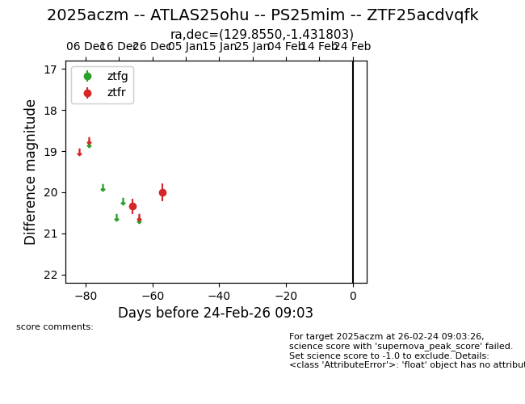
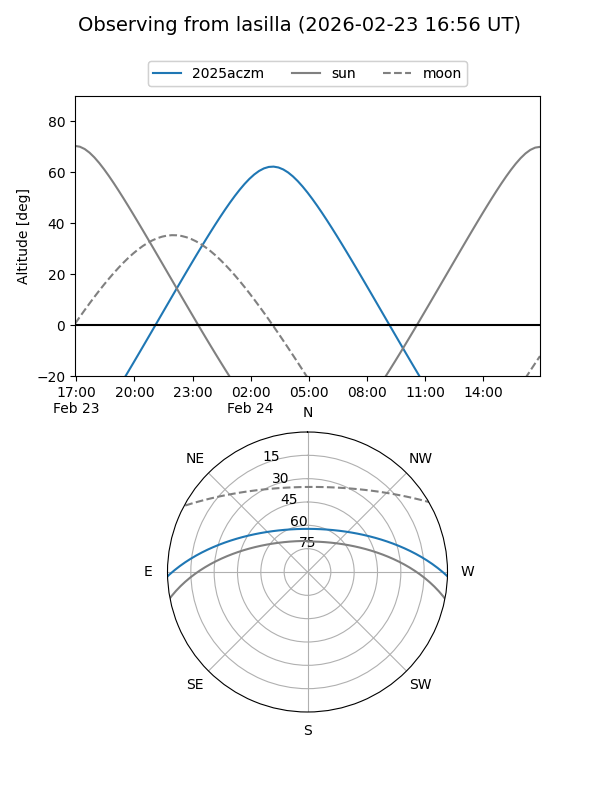
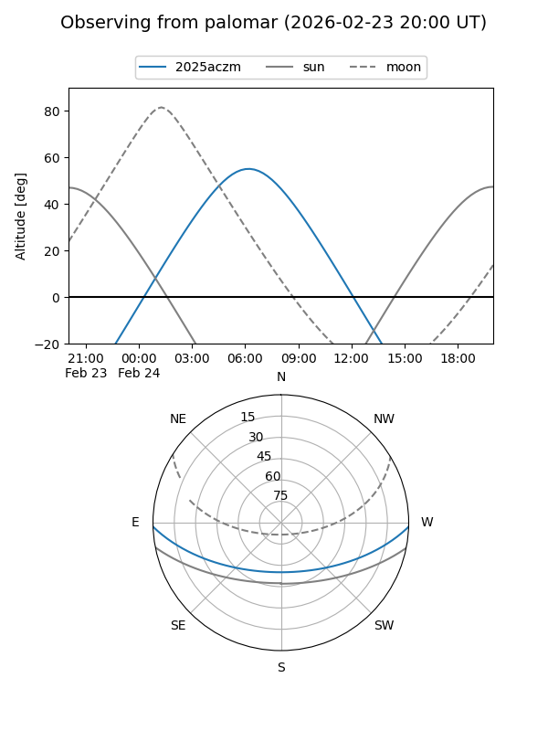

2025aczm
Target 2025aczm at 2026-01-09 12:49
Aliases and brokers:
FINK: link
Lasair: link
ALeRCE: link
TNS: link
YSE: link
alt names
ZTF25acdvqfk (ztf,fink_ztf)
2025aczm (tns,yse)
ATLAS25ohu (atlas)
PS25mim (panstarrs)
Coordinates:
equatorial (ra, dec) = 129.8550,-1.43180
equatorial (HMS+DMS) = 08:39:25.19,-01:25:54.49
galactic (l, b) = (227.3587,+23.10790)
Flags:
Photometry:
last ztfr=20.01
2 ztfr detections
Lightcurve

Visibility


Additional plots